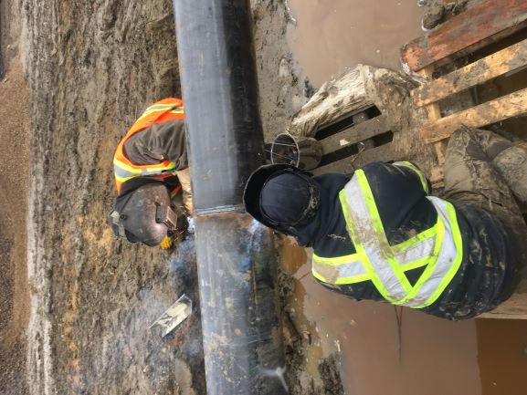
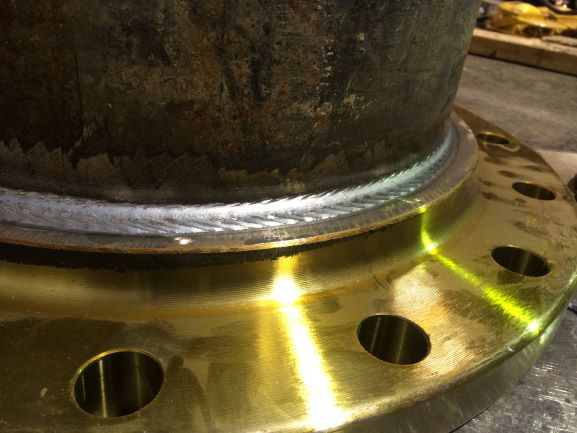

Metal Head Welding and Fabrication
Adam Bader is a Level "A" Journeyman and Redseal Welder with diverse experience in trades.
Metal Head Welding and Fabrication offers a wide range of services with a special interest in industrial and commercial maintenance, rebuilds, demonlition as well as new builds. We provide quality workmanship by experience trade professionals and regularly preform quality assurance assessments to ensure work is above industry standards.
CWB Standards
Services Available
Trades Qualifications.
- Level "A" Journeyman Welding
- Redseal Welder
- Millwrighting experience
- Journeyman Sandblasters
- NACE Inspectors available

Welding Services
- Pipe Welding
- Construction teardown and rebuilds
- Fabrication
- Sawmill maintenance and repairs
- General repairs of various metal types
- Millwrighting services also available
- Sandblasting available on request
ITA Welding Standards
We provide quality workmanship by experience trade professionals and regularly preform quality assurance assessments to ensure work is above industry standards.
